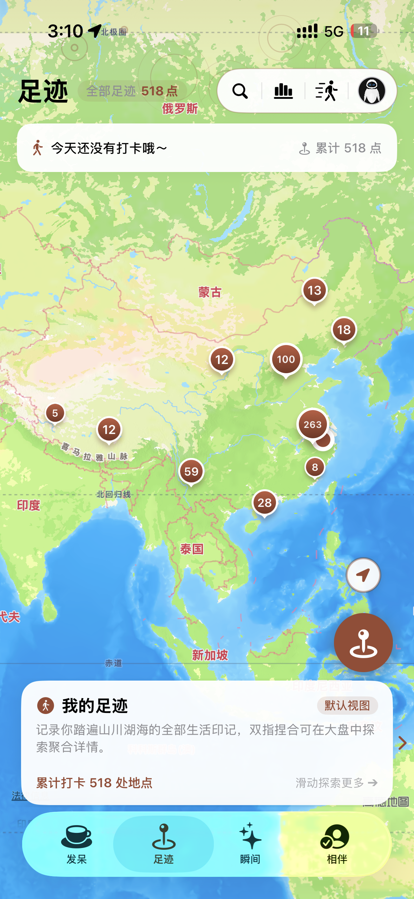
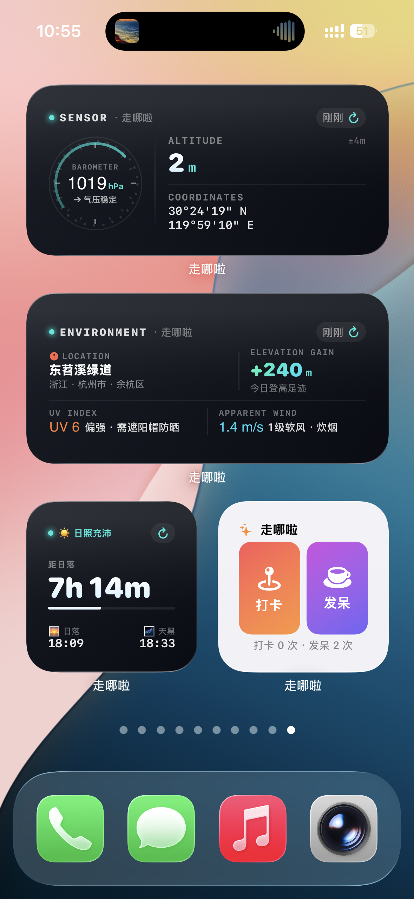
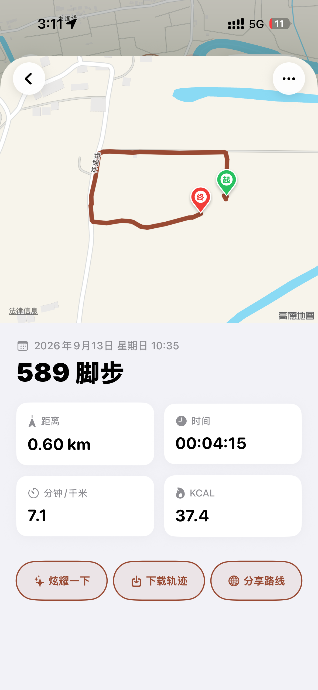
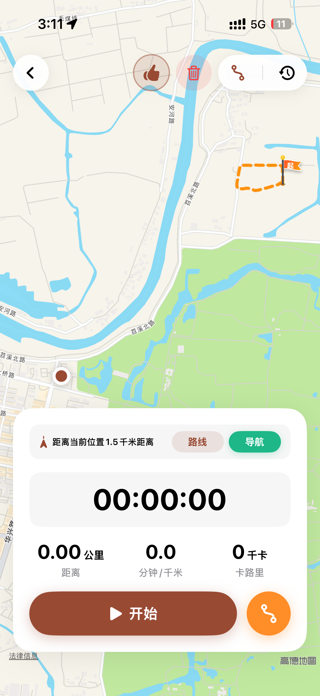
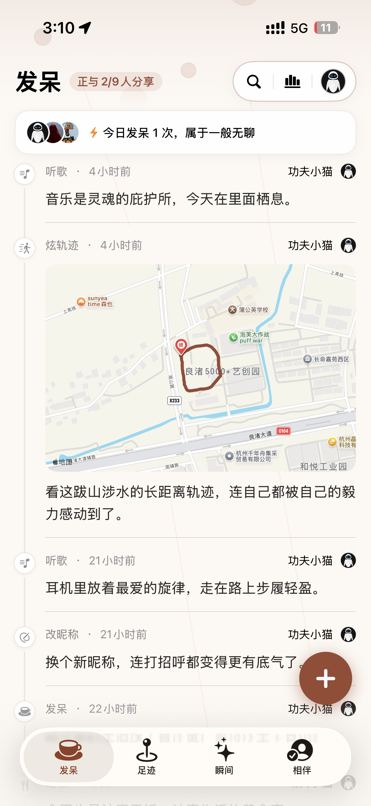
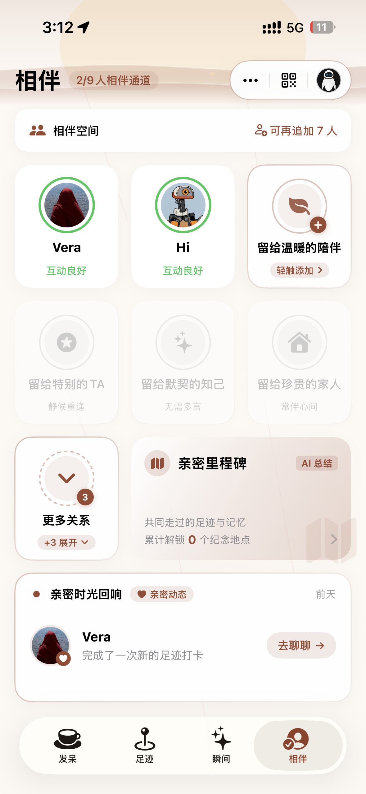
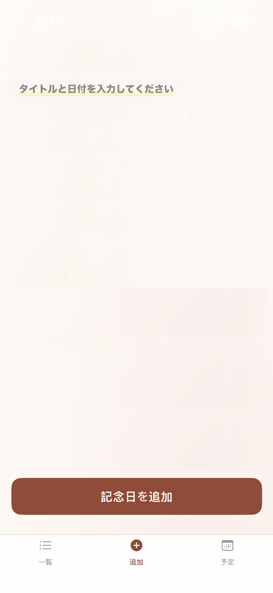

打破繁重日记的心理负担。无需精心构思长篇大论，以轻量打卡、地理足迹、端侧 AI 瞬间与亲密手账，为你构筑一份纯粹、安全、专属于个人的数字生命档案馆。

传统日记应用太沉重，社交软件充满窥探与算法推流。走哪啦为你提供一个轻量、自由、完全属于自己的私人生活刻度。
常常打开日记本却不知从何写起；商业应用强制绑定手机号与云端存储，你的足迹、随笔与私人照片随时面临数据泄露与算法画像。
以极低门槛的“发呆打卡”、“足迹定位”和“端侧 AI 瞬间”量化日常。纯离线运行，哪怕在没有信号的深山或机舱，你的生活档案馆永远触手可及。
从底层代码到界面像素，走哪啦以近乎苛刻的标准打磨每一个细节。
坚持零独立服务器架构。核心数据 100% 本地沙盒持久化；与家人分享及“发呆”数据则由 Apple 官方 iCloud 安全托管。
采用非对称加密算法守护身份。支持身份私钥安全导出，并在激活后 3~7 天提供贴心备份提醒管家。
零广告、零第三方追踪 SDK。端侧 AI 模型直接在设备芯片上推理，绝不将你的照片、定位与日记上传云端。
原生 SwiftUI 匠心打造。羊皮纸复古手账、自适应半年贡献热力图、拍立得倾斜相片与 Taptic 触觉反馈。
无论你是漫步街头的探索者，还是珍视回忆的伴侣，走哪啦都能完美契合你的节奏。
不仅是工具，更是一件融合了先进算法与艺术审美的生活记录杰作。
面向登山、徒步与骑行场景，支持锁屏与后台常驻追踪。内置 3 米动态位移过滤与 35 米精度降噪算法，彻底杜绝发烫与电量暴跌。
长下拉触发回弹震动，自动统计当日活动频次，并以幽默口吻为你评定无聊指数。
借鉴 GitHub 贡献矩阵算法，在足迹大盘中自适应撑满展示近 182 天的生活轨迹活跃度。
自动识别 1,000 米内的重合足迹。在复古羊皮纸上散落 10 天内的拍立得照片，自动生成怀旧叙事。



支持 1x1、2x2、1x2、4x2 以及 iOS 17 锁屏组件。大热区一键打卡与发呆，数据实时双向同步。
基于端侧 FoundationModels 模型自动提炼心理学洞察。340×530 离屏高保真渲染，一键存入相册。
点击切换不同功能模块，直观感受走哪啦的精湛设计与流畅交互。
采用 MapKit 点聚合算法，支持多级缩放。在户外徒步模式下，实时计算全程距离、硬件步数与卡路里消耗，并支持一键生成高清足迹地图海报。

生活不仅需要前进，更需要停下来发呆。轻松记录无聊时刻与碎片灵感，长下拉展开弹簧回弹统计面板。

通过蓝牙碰一碰或离线加密二维码快速连接伴侣。空间算法自动计算双方重叠的 1km 共同足迹，在羊皮纸与拍立得照片墙中重温美好回忆。

支持图文、心情与地理标签。内置 Apple FoundationModels 端侧模型，自动为你生成精炼标题，并在周末呈现 1:1 拍立得复古周报。

在这个个人隐私被肆意买卖和分析的时代，走哪啦坚守本地沙盒与密码学保护，让你的回忆坚如磐石。
| 对比维度 | ✨ 走哪啦 (ZounaLa) | ☁️ 常见商业云端记录软件 |
|---|---|---|
| 数据存储位置 | ✓ 本地沙盒 + Apple 官方 iCloud 托管（零独立服务器） | ✕ 第三方自建公共云服务器 |
| AI 总结与周报 | ✓ Apple FoundationModels 端侧推理 | ✕ 将用户私密日记上传大模型云端 |
| 身份与名片认证 | ✓ Curve25519 非对称加密私钥 | ✕ 手机号 / 实名认证 / 社交关系链 |
| 第三方广告与埋点 | ✓ 0 广告 · 0 统计 SDK · 0 追踪 | ✕ 内置广告推广与用户行为大数据画像 |
| 脱网与断网可用性 | ✓ 飞行模式 / 深山脱网全功能可用 | ✕ 无法加载历史数据，服务随时可能中断 |
| 数据导出与归属 | ✓ 一键标准 ZIP 全量导出与随时还原 | ✕ 厂商封闭锁定，难以无损迁移数据 |
走哪啦深度整合 Apple 最新系统级框架与硬件传感器能力。
基于声明式 SwiftUI 架构与 iOS 原生弹簧动画曲线，集成 UIImpactFeedbackGenerator 细腻震动反馈。
高性能点聚合 MKClusterAnnotation 与 MKMapSnapshotter 离线高精度底图渲染引擎。
端侧神经引擎加速，实现零延迟、零网络消耗的 30 字智能标题提炼与心理学生活周报。
Bounding Box 矩形预过滤与 Haversine 球面距离两阶段高精度空间碰撞匹配，毫秒级得出重合点。
银行级非对称加密算法，生成防伪二维码名片与去中心化身份私钥。
深度适配 Siri 快捷指令与 AppShortcutsProvider，一声口令即可完成打卡与发呆记录。
关于走哪啦的使用、数据安全与功能特性，你可能想了解这些。
绝对不会上传至任何第三方服务器。走哪啦坚持“零独立服务器”隐私架构，所有核心足迹、照片与随笔均加密存储在您 iPhone 本地沙盒内；若使用亲友空间与发呆同步，数据也是直接依托苹果官方 iCloud 进行加密托管，我们绝不收集、中转或窥探您的隐私。
不会。走哪啦内置专门研发的 3 米动态位移过滤与 35 米精度降噪算法，在锁屏和后台运行时智能休眠无效 GPS 计算，既能保证路线精准平滑，又彻底杜绝机身发烫与异常电量消耗。
在设置中点击“数据备份与导出”，系统会生成一份包含全部打卡、照片、瞬间和配置的标准加密 ZIP 压缩包。在新手机中导入该文件即可瞬间完整恢复所有历史记录。
与家人分享的功能以及“发呆”同步数据完全依托 Apple 官方的 iCloud 私有云（CloudKit）进行加密托管与端到端安全同步，数据受苹果官方高标准安全体系保护。我们坚持零独立业务服务器方案，开发者与第三方均无法获取您的个人数据。
系统会自动统计您今日的发呆与活动打卡频次，根据区间给出趣味评语（如“轻微放空”、“一般无聊”、“非常无聊”、“实在太无聊了”），以轻松幽默的方式帮助您量化闲暇时光。